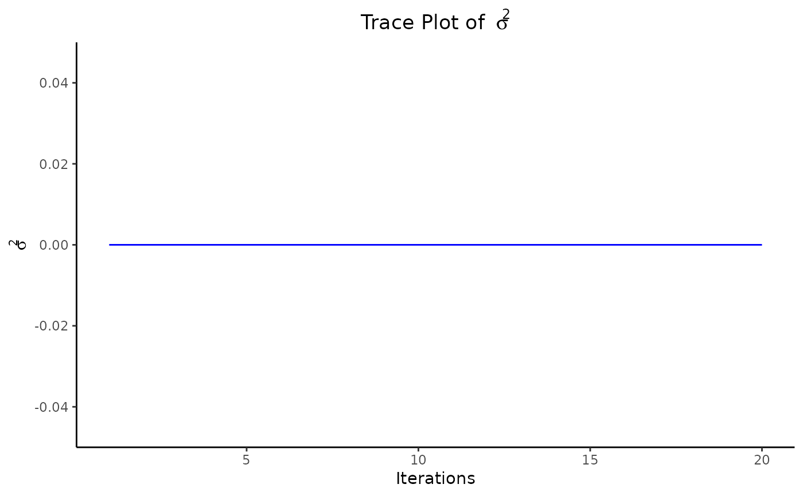

Generates diagnostic and visualization plots for the BayesAMMI model.
Arguments
- x
An object of class
BayesAMMIcontaining results from a Bayesian AMMI analysis.- plot_selection
A numeric value (1 to 6) or "all" (default) specifying which plots to generate:
1: Trace and histogram plots for \(\mu\).
2: Trace and histogram plots for \(\sigma^2\).
3: AMMI method biplot.
4: Bayesian AMMI method biplot.
5: All trace and histogram plots.
6: All biplots.
"all": All available plots.
- ...
Additional arguments (not used).
Details
The function generates diagnostic and visualization plots based on the `plot_selection` argument.
Author
Muhammad Yaseen (myaseen208@gmail.com)
Examples
data(Maiz)
fm1 <- bayes_ammi(
.data = Maiz
, .y = Yield
, .gen = Gen
, .env = Env
, .rep = Rep
, .nIter = 20
)
plot(x = fm1, plot_selection = 1)
plot(x = fm1, plot_selection = 2)

plot(x = fm1, plot_selection = 3)
plot(x = fm1, plot_selection = 4)
plot(x = fm1, plot_selection = 5)
plot(x = fm1, plot_selection = 6)